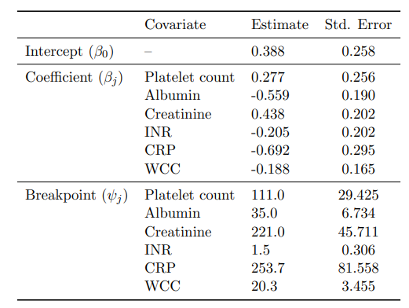
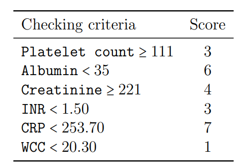
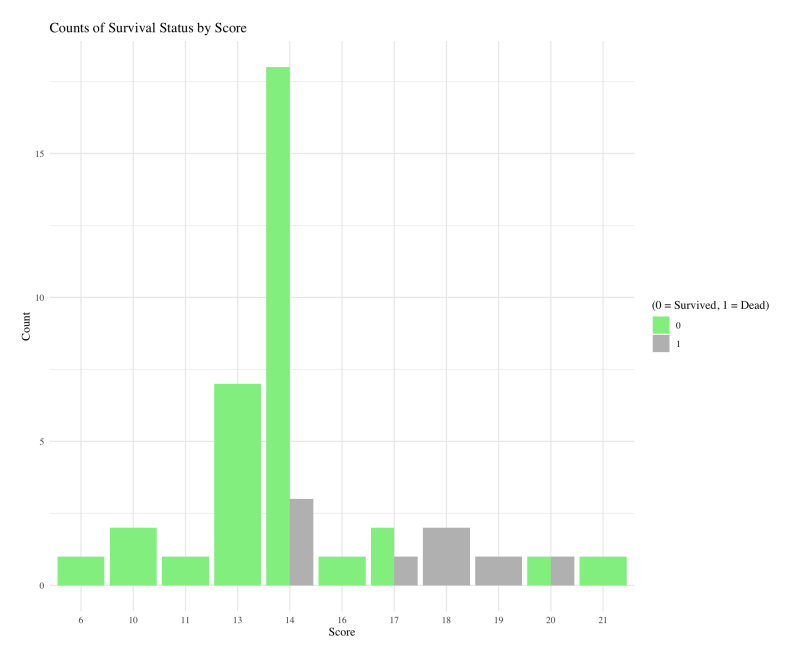

Upper limb necrotizing fasciitis: 20‑year global study
Research assistant · The Chinese University of Hong Kong · Supervisor: Prof. Keith Chan

Visualization of the mortality prediction results with respect to each covariate

Fitted segmented linear regression model

Points associated with the presence/absence of each covariate

A histogram of the total scores received by the patients
Project summary
- This research provides a epidemiological study of upper limb necrotizing fasciitis caused by flesh‑eating bacteria over the past 20 years.
- Resonse variables: mortality (binary) and amputation type (multinomial).
- Predictor variables: 21 clinical variables.
- Mortality was modeled via logistic regression, and amputation type was modeled via multinomial logistic regression (with AIC‑guided backward selection and collinearity diagnostics).
- 5‑fold cross‑validation: 75.0% (mortality) and 80.9% (amputation).
- A clinical scoring system was produced using segmented linear regression, providing strong predictive power and intuitive interpretation for rapid clinical decisions; 5‑fold cross‑validation: 70.5%.
- Mortality score \(\hat{Dead}\) example: \[ \hat{Dead} = 0.388 + 0.277\,\mathbf{1}(\text{Platelet count}>111) - 0.559\,\mathbf{1}(\text{Albumin}>35) + \cdots - 0.188\,\mathbf{1}(\text{WCC}>20.3). \] Decision rule: \( \hat{Dead} > 0.201 \Rightarrow \text{Predicted death}.\), the closer the value of \(\hat{Dead}\) is to 1 (to 0), the more likely it is that the patient is predicted to die (to survive).
- Received the Best Original Research Award for “Upper Limb Necrotizing Fasciitis – A 20‑year Review”.